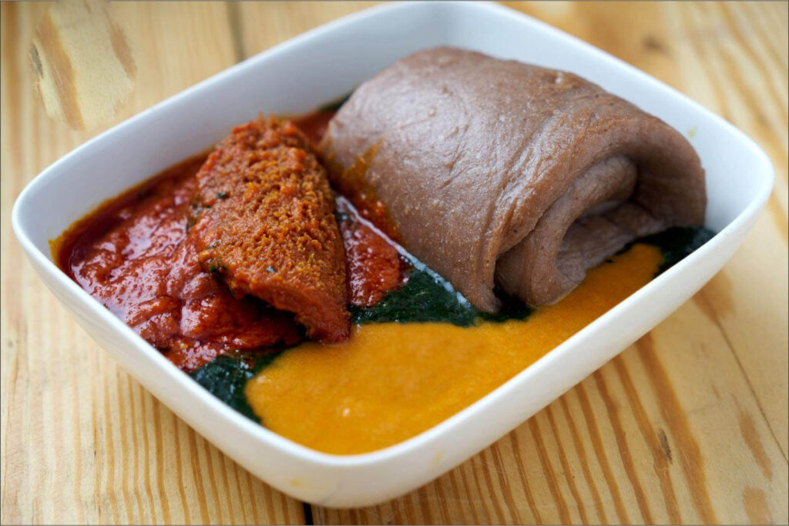

Pinkhat Special
Nigerian Recipes by Pinkhat
Amala

Description
Amala is a smooth, dark brown swallow made from yam flour (elubo), a beloved staple among the Yoruba people. It's traditionally served with ewedu soup and gbegiri (bean soup), often accompanied by assorted meat or fish, making for one of the most satisfying combinations in Yoruba cuisine
Ingredients
- 2 cups yam flour (elubo)
- 3 cups water
- 1 extra cup water for mixing
Steps
- Boil the water in a pot until it comes to a rolling boil.
- Reduce the heat slightly, then gradually sprinkle in the yam flour while stirring continuously to avoid lumps.
- Keep stirring and turning with a wooden spoon (or "ijabe") until the mixture becomes smooth, thick, and elastic.
- Add small amounts of hot water if the mixture is too stiff, and continue turning until fully smooth.
- Mold into balls or scoops using a wet spoon or spatula.
- Serve hot alongside ewedu, gbegiri, or your preferred soup.